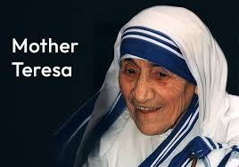
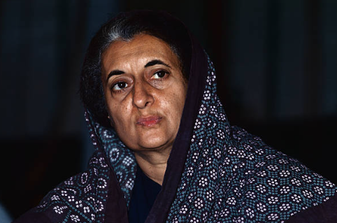
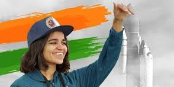
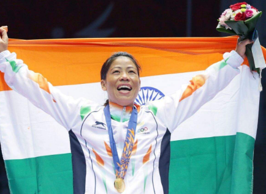

GREAT WOMEN OF THE PAST
Women The Real Architects Of Society
.jpeg)
There are many more women in India who have and who continue to inspire and succeed in different walks of life in their own way.
There are many more women in India who have and who continue to inspire and succeed in different walks of life in their own way.

According to Mother Teresa, the "greatest destroyer of peace today" is "the cry of the innocent unborn child" meaning she believed that abortion was the most significant threat to peace in the world, and she wanted to fight against it by advocating for the protection of unborn life and spreading the message of love.

She led the Congress to victory in two subsequent elections, starting with the 1967 general election, in which she was first elected to the lower house of the Indian parliament, the Lok Sabha. In 1971, her party secured its first landslide victory since her father's sweep in 1962, focusing on issues such as poverty.

Kalpana Chawla was The first Indian-born woman and the second Indian person to fly in space, following cosmonaut Rakesh Sharma who flew in 1984 in a spacecraft. On her first mission, Chawla traveled over 10.4 million miles in 252 orbits of the earth, logging more than 372 hours in space.

She is a six-time (2002, 2005, 2006, 2008, 2010, 2018) world champion - a record in women's boxing - while her other podium finish, a bronze, came in 2019. Mary Kom's maiden world title came in 2002, making her The first Indian boxer to win gold at the global meet.